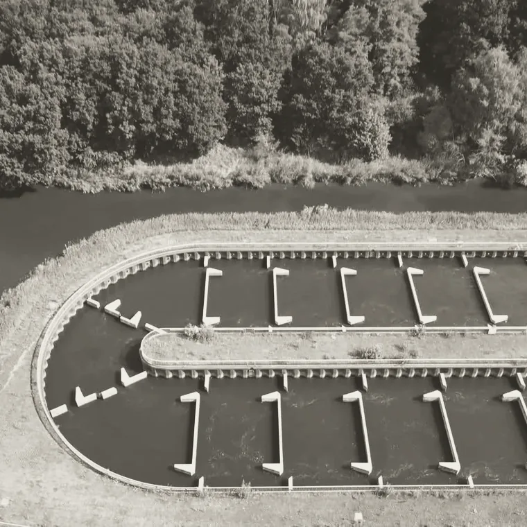
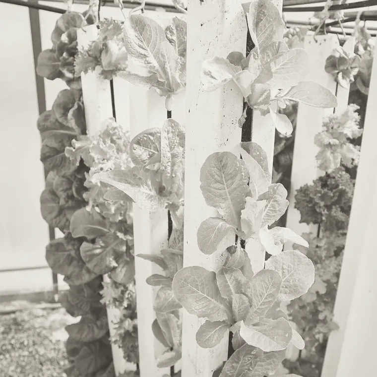
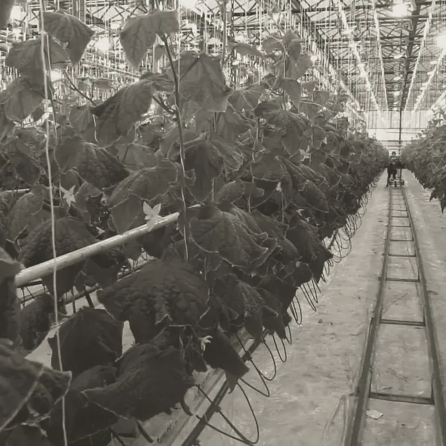
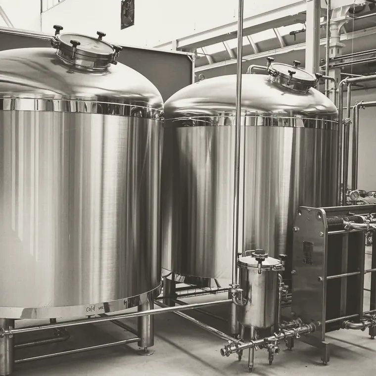
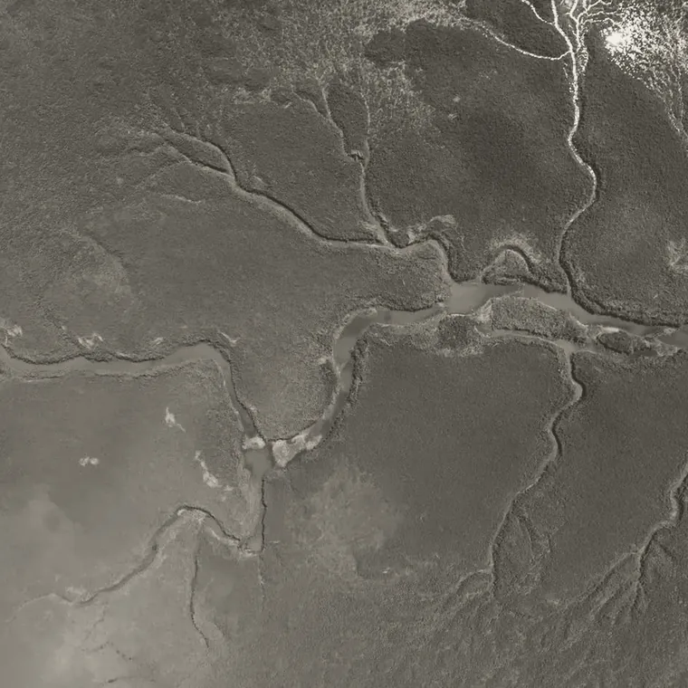
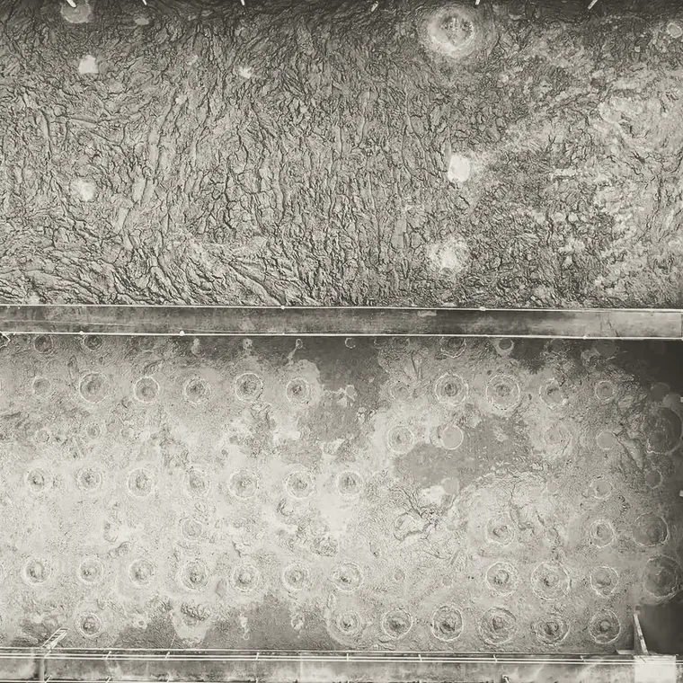

Orbital Ecology · Technical overview · Revision 2026.08
Living systems fail in silence.
Every gauge on a closed system measures a consequence. We estimate the state that produced it, and simulate that state forward.
Abstract
In a closed biological process, the variable that decides the outcome is not measured. Dissolved oxygen is what the biology left behind. Ammonia is what the biofilter has not cleared. Slab EC is a receipt. Instruments report what the process already did, so operators fund margin they cannot size and respond to symptoms rather than causes.
We write the process down as a mechanistic model, solve backwards to recover the state no instrument reports, and integrate that state forward. The output is a forecast with a stated confidence, not an alarm. Results to date are benchmark validation and one held-out backtest on commercial operating history. There is no production deployment.S8
§ 1
The variable that decides the outcome is unmeasured.
A hidden state drifts for hours while every instrument reads normal, then the observable steps. A threshold alarm cannot help with that shape, because the threshold is drawn on the thing that moves last. An estimator can, because it watches the thing that moves first.
The cost is economic before it is technical. Because the state cannot be seen, a well-run facility runs with margin: extra aeration, conservative loading, stock density below what the system could carry. That margin is paid every day to insure against a night nobody can predict. Published incidents put the acute cost at USD 1.16M and USD 5M in single events at land-based farms,S1,S2 and aeration alone accounts for 50 to 90 percent of plant electricity in conventional activated sludge, set conservatively because nitrifier state is not measured.S3
§ 2
Three steps. One of them changes by domain.
Steps two and three are identical whether the system is a recirculating farm, an activated sludge reactor, a fermenter or a sealed habitat. Only the process model is rewritten. That is why one engine serves seven markets, and why the work compounds across every deployment.
Write the biology down
A mechanistic model of the system: reaction kinetics, transport, uptake, population dynamics. This is the only step that changes between an oyster hatchery and a habitat, and it is where the domain work lives.
Solve backwards
Bayesian state estimation runs that model against the sensors already installed and recovers the state variables no instrument reports, with an uncertainty band, every cycle.
Integrate forward
Push the recovered state ahead in time under the planned operating strategy. The warning hours come from here. The output is a forecast with a stated confidence, not an alarm.
On deploymentThe engine is read-only. It reads existing telemetry and returns a forecast with a confidence band. It connects to no control loop and changes no set point. Autonomous control is roadmap, not product.
§ 3
Seven markets, one estimator, one platform beneath them.
An aquaculture operator should be able to buy an aquaculture product rather than a space product. The markets differ in buyer, regulation and sales cycle. What is shared is the engine, and the engine is the part that compounds.

OE/01 CURRENT Aquaculture
OE/02 CANOPY Controlled agriculture
OE/03 AQUIFER Hydroponics and water OE/04 RECLAIM Bioremediation
OE/05 CULTURE Bioprocessing OE/06 ORBIS Space and life support
OE/07 FIELD Open environments
Shared NEXUS Platform layer§ 4
Every figure resolves to a run.
Simulation results are labelled as simulation. The aquaculture result is a held-out backtest on real commercial operating history. There is no production deployment and none is implied. Live process results are published to this same record as operator evaluations complete.
| Status | Ref | Benchmark | Result |
|---|---|---|---|
| Complete | OE/01 | Commercial farm historyHeld-out backtest on real land-based operating data | 6.5 h of usable lead reproduced ahead of the event. |
| In progress | OE/01 | Independent laboratoryBiofilter-health estimates checked against laboratory assay at a third-party research facility | Independent measurement validation. In progress. |
| In design | OE/02 | Retrospective test protocolControlled environment agriculture | Protocol in design with operators. Result published on completion of the run. |
| In design | OE/03 | Coupled-loop test protocolHydroponic nutrient loops and aquaponics | Scoping with operators. Runs the coupled form of the OE/01 and OE/02 estimators. |
| Complete | OE/04 | IWA BSM1Standard activated sludge benchmark, dissolved oxygen channel | Prediction error reduced 92%. Excursions identified more than 12 h ahead. |
| Complete | OE/04 | IWA ADM1Reference anaerobic digestion model, one-step prediction | Error 163.7 to 0.77. |
| Complete | OE/05 | Dynamic flux balance, E. coliOne-step RMSE across complete runs | RMSE 0.062 to 0.011, a reduction of 82%. |
| Complete | OE/06 | SIMOC habitat simulator60 runs, 7 configurations, Biosphere 2 and Mars models | 98% of breaches identified pre-event. Median lead 11 h, mean 34, max 168. R squared 0.87 on hidden state. False alarm 11%. |
| Scheduled | Commercial | First paid pilotsTerms and domains set per operator | Scheduled for the first half of 2027. |
§ 5
References.
- S1Proximar Seafood mortality incident, June 2025170,000 salmon lost overnight at a land-based farm in Japan after circulation pumps stopped and oxygen fell in two tanks. Reported loss NOK 12 million, about USD 1.16 million.
The Fish Site / SalmonBusiness, June 2025Source - S2Sustainable Blue mortality incident, November 2023100,000 Atlantic salmon lost at a land-based farm in Nova Scotia after a carbon dioxide filter failed structurally. Reported loss USD 5 million, about 20 percent of stock on site.
WeAreAquaculture / CBC News, November 2023Source - S3Aeration share of wastewater treatment plant energyAeration accounts for 25 to 60 percent of energy use across wastewater treatment plants generally, and 50 to 90 percent of plant electricity in conventional activated sludge systems specifically.
University of Michigan Center for Sustainable Systems, US Wastewater Treatment Factsheet; Drewnowski et al., Processes 7(5):311, 2019Source - S4IWA Benchmark Simulation Model No. 1 (BSM1)The international reference model for benchmarking control strategies on activated sludge plants.
Alex, Benedetti, Copp, Gernaey, Jeppsson, Nopens, Pons, Steyer and Vanrolleghem. IWA Task Group on Benchmarking of Control Strategies for WWTPsSource - S5IWA Anaerobic Digestion Model No. 1 (ADM1)The reference structured model for anaerobic digestion processes.
Batstone, Keller, Angelidaki, Kalyuzhnyi, Pavlostathis, Rozzi, Sanders, Siegrist and Vavilin. Water Science and Technology 45(10):65-73, 2002Source - S6Dynamic flux balance analysisThe standard method for modelling microbial metabolism through time, introduced on diauxic growth in E. coli.
Mahadevan, Edwards and Doyle. Biophysical Journal 83(3):1331-1340, 2002Source - S7SIMOC, Scalable Interactive Model of an Off-world CommunityAn agent-based simulator of closed life support systems, developed at Arizona State University's School of Earth and Space Exploration and hosted by the National Geographic Society. Configurations include Biosphere 2 mission parameters.
Arizona State University Interplanetary InitiativeSource - S8Orbital Ecology internal benchmark recordEvery figure on this site resolves to the validation record, where run counts, configurations, error reductions, lead times and false alarm rates are stated in full. Simulation results are labelled as simulation. All results to date are benchmark validation and retrospective backtesting. Live process results are published to the same record as operator evaluations complete.
Orbital Ecology, benchmarks OE/01 and OE/04 through OE/06
§ 6
Send one export. Get the answer in three weeks.
You send a historical sensor export with the outcome window withheld. We run it blind and report how many hours of warning the engine would have given, and how often it would have been wrong on that same history. No fee, no integration, no connection to any live system. The file is deleted afterwards.